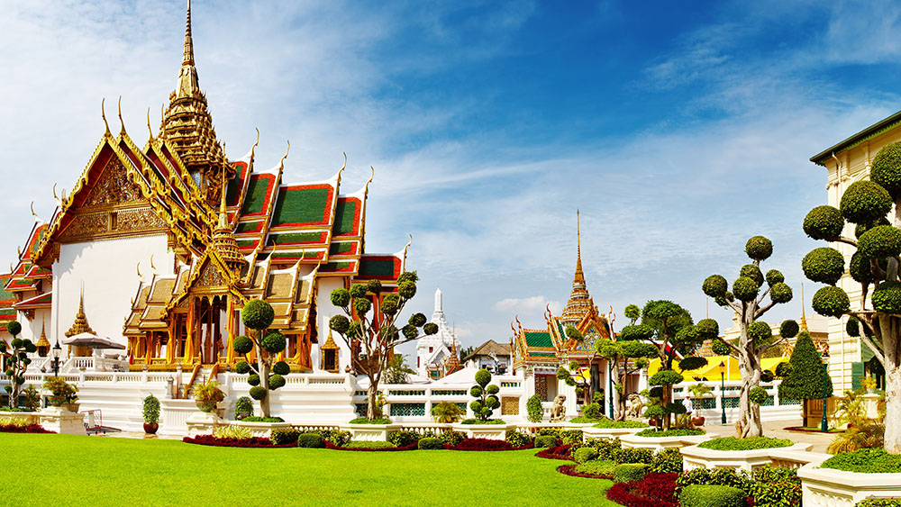

My Trip
Stepping off the plane and into the bustling city of Bangkok, I could immediately feel the vibrant energy that permeated every corner. It was my first time visiting this captivating city, and I was eager to immerse myself in its rich culture and explore its many wonders.
One of my most memorable experiences in Bangkok was visiting the Grand Palace. As I entered the palace grounds, I was greeted by intricate architectural details, shimmering golden structures, and beautifully manicured gardens. The sight of the Temple of the Emerald Buddha, with its exquisite craftsmanship and mesmerizing aura, left me in awe. I couldn't help but feel a sense of reverence and tranquility in the presence of such magnificence.
Another highlight of my trip was wandering through the vibrant streets of Chinatown (Yaowarat). The intoxicating aroma of sizzling stir-fries and the lively chatter of locals filled he air. I delighted in exploring the narrow alleyways, lined with bustling market stalls and enticing street food vendors. I savored the flavors of delectable dim sum, succulent roasted duck, and aromatic bowls of noodle soup. Each bite was a revelation, an explosion of flavors that awakened my taste buds to the wonders of Thai-Chinese cuisine.
One evening, I ventured to the Chao Phraya River and hopped onto a traditional long-tail boat. As we glided along the river, passing by glittering temples and luxurious riverside hotels, I marveled at the juxtaposition of old and new, tradition and modernity. The gentle breeze caressed my face, and the rhythmic sounds of the boat's engine provided a soothing backdrop to the enchanting views. But it wasn't just the iconic landmarks and bustling streets that made Bangkok special. It was the warmth and friendliness of the Thai people that left a lasting impression on me. Everywhere I went, I encountered smiling faces and genuine hospitality. From the street food vendors who patiently explained the ingredients of their dishes to the locals who eagerly shared stories about their city, I felt welcomed and embraced by the vibrant spirit of Bangkok.
As my time in Bangkok came to an end, I couldn't help but feel a mix of gratitude and a desire to return. The city had opened my eyes to a new world of flavors, sights, and experiences. It had ignited a sense of wanderlust within me, fueling a desire to explore more of this beautiful country and its captivating cities. Bangkok had become more than just a destination—it had become a part of me. Its vibrant streets, rich culture, and warm hospitality had left an indelible mark on my heart. As I bid farewell to this enchanting city, I knew that my journey had only just begun, and I was eager to continue unraveling the mysteries and delights of the world." I hope this personal experience in Bangkok captures the essence of the city and brings your travel blog to life. Enjoy sharing your adventures with your readers!
- 